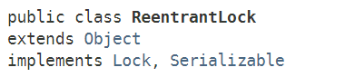

早期的JDK版本中，仅仅提供了synchronizd、wait、notify等等比较底层的多线程同步工具，开发人员如果需要开发复杂的多线程应用，通常需要基于JDK提供的这些基础工具进行封装，开发自己的工具类。JDK1.5+后，Doug Lea根据一系列常见的多线程设计模式，设计了JUC并发包，其中java.util.concurrent.locks包下提供了一系列基础的锁工具，用以对synchronizd、wait、notify等进行补充、增强。
java.util.concurrent.locks包的结构如下：
包内接口和类的简单UML图如下：
Lock接口简介
Lock接口可以视为synchronized的增强版，提供了更灵活的功能。该接口提供了限时锁等待、锁中断、锁尝试等功能。
接口定义
该接口的方法声明如下：
需要注意lock()和lockInterruptibly()这两个方法的区别：
lock()方法类似于使用synchronized关键字加锁，如果锁不可用，出于线程调度目的，将禁用当前线程，并且在获得锁之前，该线程将一直处于休眠状态。lockInterruptibly()方法顾名思义，就是如果锁不可用，那么当前正在等待的线程是可以被中断的，这比synchronized关键字更加灵活。
使用示例
可以看到，Lock作为一种同步器，一般会用一个finally语句块确保锁最终会释放。
Lock lock = ...;
if (lock.tryLock()) {
try {
// manipulate protected state
} finally {
lock.unlock();
}
} else {
// perform alternative actions
}Condition接口简介
Condition可以看做是Obejct类的wait()、notify()、notifyAll()方法的替代品，与Lock配合使用。
当线程执行condition对象的await方法时，当前线程会立即释放锁，并进入对象的等待区，等待其它线程唤醒或中断。
JUC在实现Conditon对象时，其实是通过实现AQS框架，来实现了一个Condition等待队列，这个在后面讲AQS框架时会详细介绍，目前只要了解Condition如何使用即可。
接口定义
使用示例
Oracle官方文档中给出了一个缓冲队列的示例：
假定有一个缓冲队列，支持 put 和 take 方法。如果试图在空队列中执行 take 操作，则线程将一直阻塞，直到队列中有可用元素；如果试图在满队列上执行 put 操作，则线程也将一直阻塞，直到队列不满。
class BoundedBuffer {
final Lock lock = new ReentrantLock();
final Condition notFull = lock.newCondition();
final Condition notEmpty = lock.newCondition();
final Object[] items = new Object[100];
int putptr, takeptr, count;
public void put(Object x) throws InterruptedException {
lock.lock();
try {
while (count == items.length) //防止虚假唤醒，Condition的await调用一般会放在一个循环判断中
notFull.await();
items[putptr] = x;
if (++putptr == items.length)
putptr = 0;
++count;
notEmpty.signal();
} finally {
lock.unlock();
}
}
public Object take() throws InterruptedException {
lock.lock();
try {
while (count == 0)
notEmpty.await();
Object x = items[takeptr];
if (++takeptr == items.length)
takeptr = 0;
--count;
notFull.signal();
return x;
} finally {
lock.unlock();
}
}
}等待 Condition 时，为了防止发生“虚假唤醒”， Condition 一般都是在一个循环中被等待，并测试正被等待的状态声明，如上述代码注释部分。
虽然上面这个示例程序即使不用while，改用if判断也不会出现问题，但是最佳实践还是做while循环判断——Guarded Suspension模式，以防遗漏情况。
ReadWriteLock接口简介
ReadWriteLock接口是一个单独的接口（未继承Lock接口），该接口提供了获取读锁和写锁的方法。
所谓读写锁，是一对相关的锁——读锁和写锁，读锁用于只读操作，写锁用于写入操作。读锁可以由多个线程同时保持，而写锁是独占的，只能由一个线程获取。
接口定义
使用注意
读写锁的阻塞情况如下图：
举个例子，假设我有一份共享数据——订单金额，大多数情况下，线程只会进行高频的数据访问（读取订单金额），数据修改（修改订单金额）的频率较低。
那么一般情况下，如果采用互斥锁，读/写和读/读都是互斥的，性能显然不如采用读写锁。
另外，由于读写锁本身的实现就远比独占锁复杂，因此，读写锁比较适用于以下情形：
- 高频次的读操作，相对较低频次的写操作；
- 读操作所用时间不会太短。（否则读写锁本身的复杂实现所带来的开销会成为主要消耗成本）
ReentrantLock类简介
ReentrantLock类，实现了Lock接口，是一种可重入的独占锁，它具有与使用 synchronized 相同的一些基本行为和语义，但功能更强大。ReentrantLock内部通过内部类实现了AQS框架(AbstractQueuedSynchronizer)的API来实现独占锁的功能。
类声明
ReentrantLock类直接实现了Lock接口：

构造声明
ReentrantLock类提供了两类构造器：
ReentrantLock类的其中一个构造器提供了指定公平策略 / 非公平策略的功能，默认为非公平策略。
公平策略：在多个线程争用锁的情况下，公平策略倾向于将访问权授予等待时间最长的线程。也就是说，相当于有一个线程等待队列，先进入等待队列的线程后续会先获得锁，这样按照“先来后到”的原则，对于每一个等待线程都是公平的。
非公平策略：在多个线程争用锁的情况下，能够最终获得锁的线程是随机的（由底层OS调度）。
注意：一般情况下，使用公平策略的程序在多线程访问时，总体吞吐量（即速度很慢，常常极其慢）比较低，因为此时在线程调度上面的开销比较大。
举个例子：
假设采用公平策略，线程A首先获取了锁，线程B和线程C等待获取锁，如下图：
当线程A释放锁时，线程B将经历从 挂起->唤醒 的线程调度过程，线程调度非常耗时。
在线程B的 挂起->唤醒 阶段：
- 如果采用非公平策略，那么线程C可以立即获取锁，线程C使用完并释放锁后，线程B可能才刚唤醒完成；此时线程B又可以去获取锁，这样线程B和线程C的效率都得到提升，系统吞吐量提升；
- 如果采用公平策略，线程C即使可用，也要等到线程调度完成，整个系统的吞吐量降低。
因此，当线程持有锁的时间相对较长或者线程请求锁的平均时间间隔较长时，可以考虑使用公平策略。此时线程调度产生的耗时间隔影响会较小。
使用方式
ReentrantLock的典型调用方式如下：
class X {
private final ReentrantLock lock = new ReentrantLock();
// ...
public void m() {
lock.lock(); // block until condition holds
try {
// ... method body
} finally {
lock.unlock();
}
}
}类原理
ReentrantLock的源码非常简单，它通过内部类实现了AQS框架，Lock接口的实现仅仅是对AQS的api的简单封装。
ReentrantReadWriteLock类简介
ReentrantReadWriteLock类，顾名思义，是一种读写锁，它是ReadWriteLock接口的直接实现，该类在内部实现了具体独占锁特点的写锁，以及具有共享锁特点的读锁，和ReentrantLock一样，ReentrantReadWriteLock类也是通过定义内部类实现AQS框架的API来实现独占/共享的功能。
ReentrantReadWriteLock类具有如下特点：
支持公平/非公平策略
与ReadWriteLock类一样，ReentrantReadWriteLock对象在构造时，可以传入参数指定是公平锁还是非公平锁。
支持锁重入
- 同一读线程在获取了读锁后还可以获取读锁；
- 同一写线程在获取了写锁之后既可以再次获取写锁又可以获取读锁；
支持锁降级
所谓锁降级，就是：先获取写锁，然后获取读锁，最后释放写锁，这样写锁就降级成了读锁。但是，读锁不能升级到写锁。简言之，就是：
写锁可以降级成读锁，读锁不能升级成写锁。
读锁套写锁会死锁、写锁套读锁却不会死锁？
- 写锁：可以对 原子
state低位 进行 ++ 来实现重入。- 读锁：可以对
HoldCounter进行 ++ 来实现重入假设有十个线程正在共享读锁，此时其中一个读线程重入了写锁，这将导致写锁的独享形同虚设，正常应该是此线程进入等待队列，等待所有线程都释放了读锁后，才能实现获得独占锁。
然而这个持有读锁的线程已经在执行逻辑了，它无法进行阻塞，如果进入阻塞状态，便会有一个问题：那就是这个阻塞的读线程将 永远无法释放读锁！这个时候，读锁套写锁就会死锁。
再谈写锁套读锁–因为持有写锁的线程已经拥有了独占锁，此时再去获取读锁，这个对于整个读写锁来说无关紧要，我们只要保证其他的线程无法获取到读锁即可。
Condition条件支持
ReentrantReadWriteLock的内部读锁类、写锁类实现了Lock接口，所以可以通过newCondition()方法获取Condition对象。但是这里要注意，读锁是没法获取Condition对象的，读锁调用newCondition()方法会直接抛出UnsupportedOperationException。
我们知道，condition的作用其实是对Object类的
wait()和notify()的增强，是为了让线程在指定对象上等待，是一种线程之间进行协调的工具。
当线程调用condition对象的await方法时，必须拿到和这个condition对象关联的锁。由于线程对读锁的访问是不受限制的（在写锁未被占用的情况下），那么即使拿到了和读锁关联的condition对象也是没有意义的，因为读线程之前不需要进行协调。
使用示例
以下是Oracle官方给出的一个例子：
使用ReentrantReadWriteLock控制对TreeMap的访问（利用读锁控制读操作的访问，利用写锁控制修改操作的访问），将TreeMap包装成一个线程安全的集合，并且利用了读写锁的特性来提高并发访问。
public class RWTreeMap {
private final Map<String, Data> m = new TreeMap<String, Data>();
private final ReentrantReadWriteLock rwl = new ReentrantReadWriteLock();
private final Lock r = rwl.readLock();
private final Lock w = rwl.writeLock();
public Data get(String key) {
r.lock();
try {
return m.get(key);
} finally {
r.unlock();
}
}
public String[] allKeys() {
r.lock();
try {
return (String[]) m.keySet().toArray();
} finally {
r.unlock();
}
}
public Data put(String key, Data value) {
w.lock();
try {
return m.put(key, value);
} finally {
w.unlock();
}
}
public void clear() {
w.lock();
try {
m.clear();
} finally {
w.unlock();
}
}
}类声明

内部嵌套类声明：
ReentrantReadWriteLock类有两个内部嵌套类ReadLock和WriteLock，这两个内部类的实例会在ReentrantReadWriteLock类的构造器中创建，并通过ReentrantReadWriteLock类的readLock()和writeLock()方法访问。
ReadLock：
WriteLock：
方法声明
ReentrantReadWriteLock类的核心方法其实就两个：readLock()和writeLock()，其它都是一些用来监控系统状态的方法，返回的都是某一时刻点的近似值。
LockSupport类简介
LockSupport类，是JUC包中的一个工具类，是用来创建锁和其他同步类的基本线程阻塞原语。（Basic thread blocking primitives for creating locks and other synchronization classes）
LockSupport类的核心方法其实就两个：park()和unpark()，其中park()方法用来阻塞当前调用线程，unpark()方法用于唤醒指定线程。
这其实和Object类的wait()和signal()方法有些类似，但是LockSupport的这两种方法从语意上讲比Object类的方法更清晰，而且可以针对指定线程进行阻塞和唤醒。
LockSupport类使用了一种名为Permit（许可）的概念来做到阻塞和唤醒线程的功能，可以把许可看成是一种(0,1)信号量（Semaphore），但与 Semaphore 不同的是，许可的累加上限是1。
初始时，permit为0，当调用unpark()方法时，线程的permit加1，当调用park()方法时，如果permit为0，则调用线程进入阻塞状态。
使用示例
来看一个例子：
假设现在需要实现一种FIFO类型的独占锁，可以把这种锁看成是ReentrantLock的公平锁简单版本，且是不可重入的，就是说当一个线程获得锁后，其它等待线程以FIFO的调度方式等待获取锁。
public class FIFOMutex {
private final AtomicBoolean locked = new AtomicBoolean(false);
private final Queue<Thread> waiters = new ConcurrentLinkedQueue<Thread>();
public void lock() {
Thread current = Thread.currentThread();
waiters.add(current);
// 如果当前线程不在队首，或锁已被占用，则当前线程阻塞
// NOTE：这个判断的意图其实就是：锁必须由队首元素拿到
while (waiters.peek() != current || !locked.compareAndSet(false, true)) {
LockSupport.park(this);
}
waiters.remove(); // 删除队首元素
}
public void unlock() {
locked.set(false);
LockSupport.unpark(waiters.peek());
}
}测试用例：
public class Main {
public static void main(String[] args) throws InterruptedException {
FIFOMutex mutex = new FIFOMutex();
MyThread a1 = new MyThread("a1", mutex);
MyThread a2 = new MyThread("a2", mutex);
MyThread a3 = new MyThread("a3", mutex);
a1.start();
a2.start();
a3.start();
a1.join();
a2.join();
a3.join();
assert MyThread.count == 300;
System.out.print("Finished");
}
}
class MyThread extends Thread {
private String name;
private FIFOMutex mutex;
public static int count;
public MyThread(String name, FIFOMutex mutex) {
this.name = name;
this.mutex = mutex;
}
@Override
public void run() {
for (int i = 0; i < 100; i++) {
mutex.lock();
count++;
System.out.println("name:" + name + " count:" + count);
mutex.unlock();
}
}
}上述FIFOMutex 类的实现中，当判断锁已被占用时，会调用LockSupport.park(this)方法，将当前调用线程阻塞；当使用完锁时，会调用LockSupport.unpark(waiters.peek())方法将等待队列中的队首线程唤醒。
通过LockSupport的这两个方法，可以很方便的阻塞和唤醒线程。但是LockSupport的使用过程中还需要注意以下几点：
park方法的调用一般要方法一个循环判断体里面。如上述示例中的：
while (waiters.peek() != current || !locked.compareAndSet(false, true)) { LockSupport.park(this); }之所以这样做，是为了防止线程被唤醒后，不进行判断而意外继续向下执行，这其实是一种Guarded Suspension的多线程设计模式。
park方法是会响应中断的，但是不会抛出异常。(也就是说如果当前调用线程被中断，则会立即返回但不会抛出中断异常)park的重载方法
park(Object blocker)，会传入一个blocker对象，所谓Blocker对象，其实就是当前线程调用时所在调用对象（如上述示例中的FIFOMutex对象）。该对象一般供监视、诊断工具确定线程受阻塞的原因时使用。
LockSupport类/方法声明
类声明：
方法声明：